THE LUMMINGS · ARTWORK COLLECTION · 13 OCTOBER 2026
The Little Tomorrow Crew,
with a little more wonder.
Illustrated campaign art and lightweight vector expressions share the same character colours and signature props. Creative illustrations show a fictional world, rather than a photograph of shipping hardware.
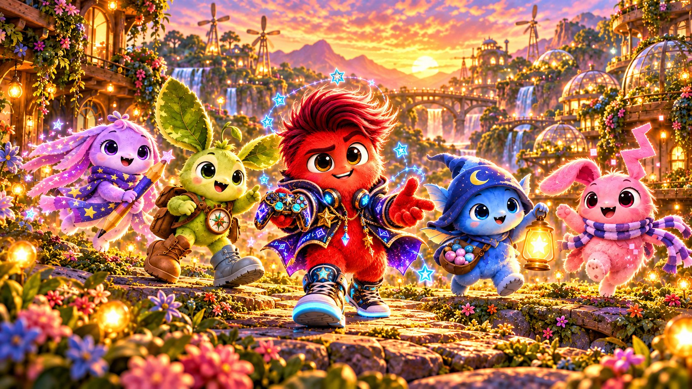
Meet the crew

Lumo
The Hyperfixation Gremlin
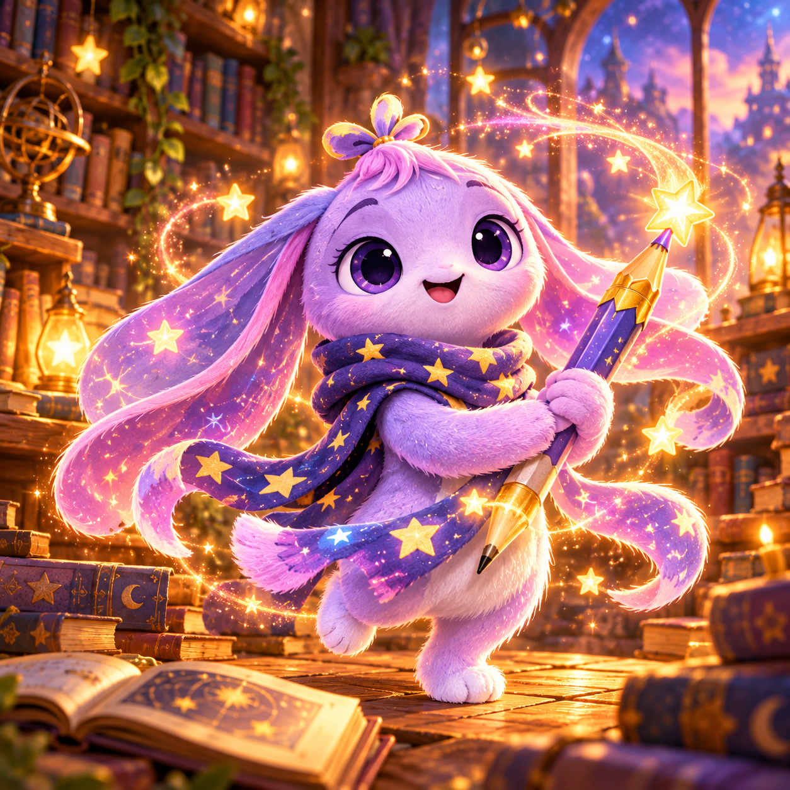
Luna
The Spooky Poet

Sprout
The Quiet Garden Sprite
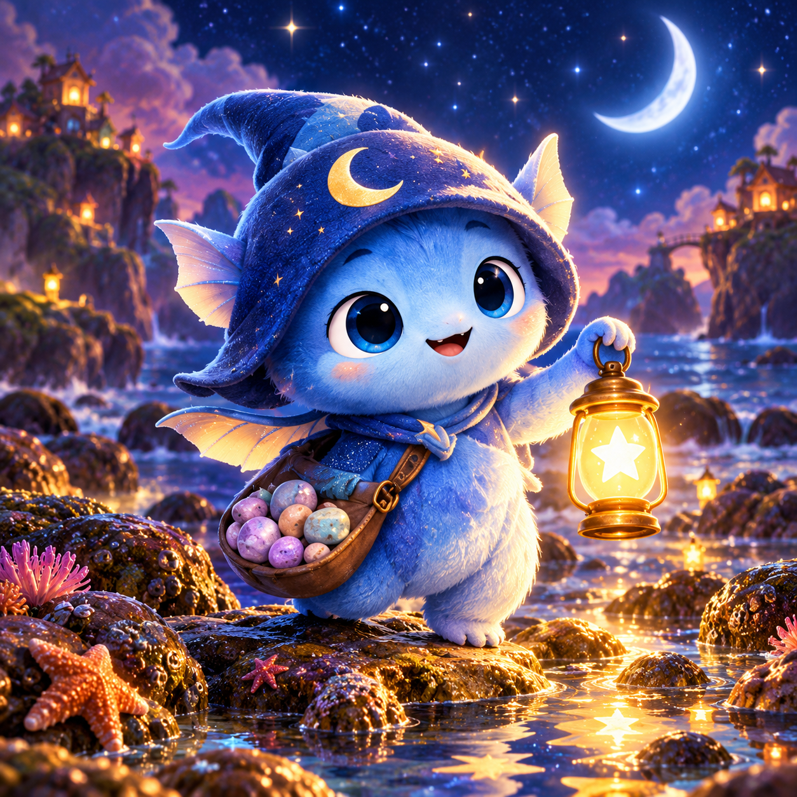
Nori
The Cosmic Weirdo

Moki
The Chaos Gremlin
Everyday adventures
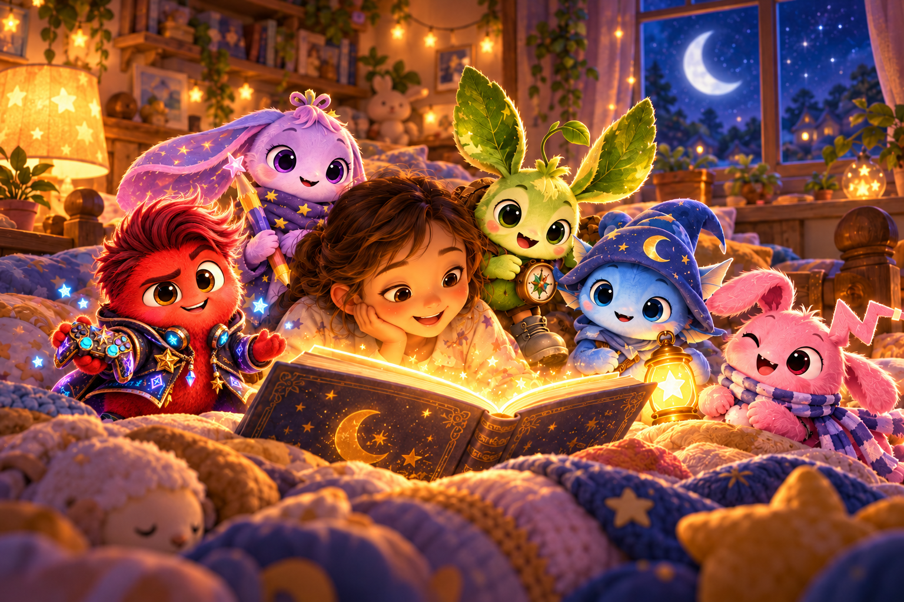
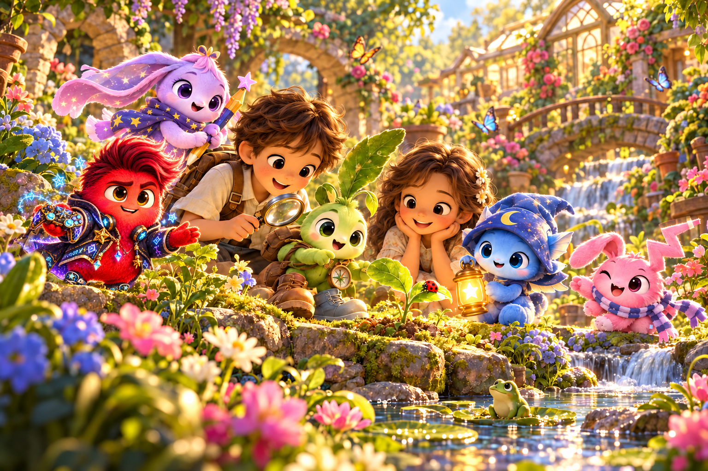

Little lights. Growing together.
Every Lumming carries a Heartlight to I-lumming-Nate the questions close to your heart. Deeply curious, naturally cautious: safety first, always. They learn with you, discover your interests and grow alongside you.
- Lumo — Questlight: turn a big question into a small co-op quest and choose a safe first step.
- Luna — Dreamlight: help a companion put a feeling or question into words, pictures or a story.
- Sprout — Traillight: break a puzzle or adventure into manageable steps and check each route before moving.
- Nori — Tidelight: make space for a quiet question, notice carefully and explore without rushing.
- Moki — Sparklight: make confusion less intimidating with a kind joke, then examine the idea carefully.
80 vector expressions
Five distinct silhouettes, sixteen moods each. Used by the website and runtime sprite renderer.
Lumo
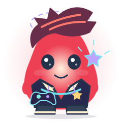
amusedcalm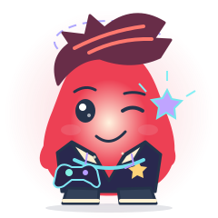
cryptic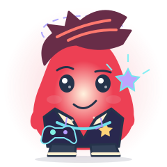
curiousdistant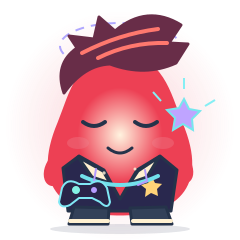
drowsyembarrassed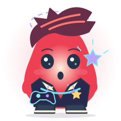
excitedhappymischievousplayfulsleepythoughtfultiredwarmwatchfulLuna
amused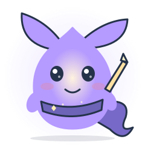
calm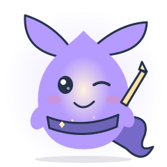
crypticcurious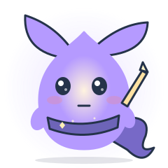
distant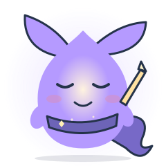
drowsyembarrassed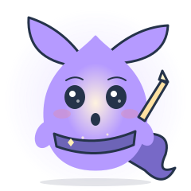
excitedhappymischievousplayful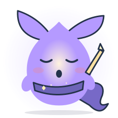
sleepy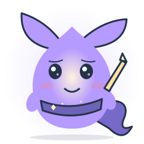
thoughtful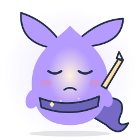
tiredwarm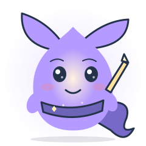
watchful Sprout
amusedcalm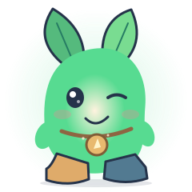
cryptic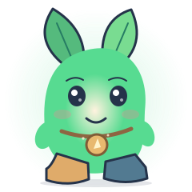
curious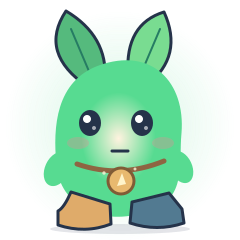
distant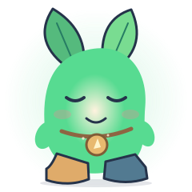
drowsyembarrassed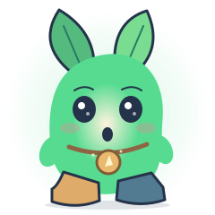
excitedhappymischievousplayful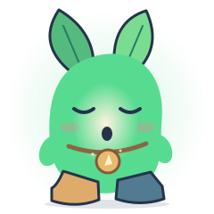
sleepy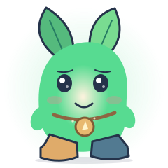
thoughtfultiredwarm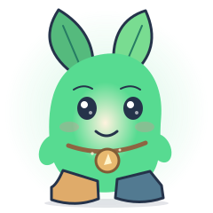
watchful Nori
amusedcalm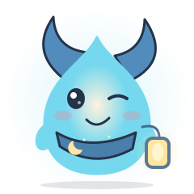
cryptic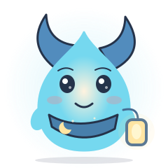
curious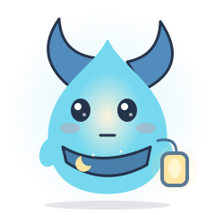
distantdrowsyembarrassed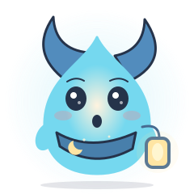
excitedhappymischievousplayfulsleepy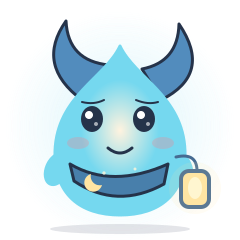
thoughtful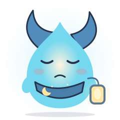
tiredwarm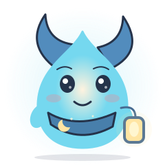
watchful Moki
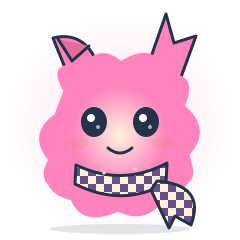
amusedcalm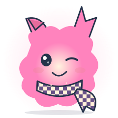
cryptic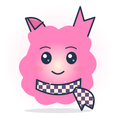
curious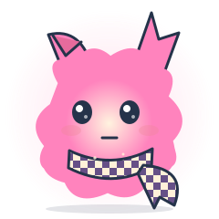
distantdrowsyembarrassedexcitedhappymischievousplayful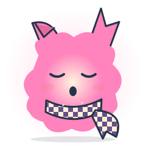
sleepy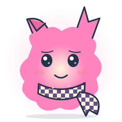
thoughtful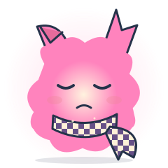
tired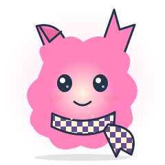
warm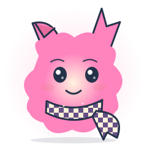
watchfulExplore their personalities and adventures →